01 / THE PROBLEM
EchoBot and ticket-sync audit
Webhook-driven workflows can fail quietly. A missing acknowledgment might indicate an unattended support message or a broken sync, but a single reaction check is not a complete audit of the ticket pipeline.
Monitoring also has its own blind spots: a bot can miss a channel, an old thread can become active again, and an expected ticket record can be missing from the reporting system.
02 / MY CONTRIBUTION
This additional engineering example is drawn from the Baam EchoBot code and operating documentation. It combines delayed support checks with weekly and monthly audit execution.
03 / ARCHITECTURE
Live checks and structural audits

Read the Mermaid definition
flowchart TB
S[Slack message event] --> F[Bot / event / channel filters]
F --> DO[Per-message Durable Object]
DO --> AL[Scheduled alarm]
AL --> R[Read root message and receipt reaction]
R --> OK[Receipt present / classify result]
R --> ALERT[Missing receipt / operator alert]
CRON[Weekly and monthly schedules] --> AUDIT[Checkpointed audit state machines]
SL[Slack channel and thread evidence] --> AUDIT
AT[Airtable ticket records] --> AUDIT
AUDIT <--> DB[(SQLite phase and cursor state)]
AUDIT --> KV[(KV evidence archive)]
AUDIT --> SCORE[Slack scorecard and classified findings]
A long audit becomes resumable work

Read the Mermaid definition
flowchart TB
I[Initialize run and channel coverage] --> S[Sweep message history]
S --> T[Expand active threads]
T --> U[Classify authors and receipts]
U --> A[Read alerts and Airtable tickets]
A --> R[Reconcile unmatched records]
R --> E[Archive evidence and publish scorecard]
S -. Save cursor .-> DB[(Durable Object SQLite)]
T -. Save phase state .-> DB
U -. Save phase state .-> DB
A -. Save cursor .-> DB
DB -. Next bounded alarm tick .-> RESUME[Resume current phase]
RESUME -. Continue .-> S
RESUME -. Continue .-> T
RESUME -. Continue .-> U
RESUME -. Continue .-> A
04 / HOW IT WORKS
Filter the incoming message
The handler excludes bot messages and irrelevant event types, checks the monitored channel pattern, and sends the candidate to a deterministically named Durable Object.
Check after the waiting window
An alarm triggers after the configured delay. The object checks the root message for the expected receipt reaction and classifies the result, including special handling for thread broadcasts.
Audit coverage and records
Weekly checks cover channel membership, form-ticket synchronization, and unresolved alerts. The monthly sweep expands active threads and reconciles Slack evidence against Airtable ticket records.
Keep a run inspectable
The audit stores intermediate state and cursors in SQLite, writes final evidence to KV, and posts a scorecard. It can progress across invocations rather than depending on one long request.
05 / ENGINEERING DECISIONS
A receipt is a signal, not proof of the whole pipeline
The live check and the record audit answer different questions. Their combination exposes failures that neither detector can establish alone.
Checkpoint before continuing long work
The audit separates enumeration, thread expansion, user classification, ticket matching, and reconciliation into bounded phases. This fits the implementation’s invocation budget and makes progress recoverable.
Explain blind spots
The delayed checker has a stale-check guard and can skip a candidate when user lookup fails. Coverage audits matter because a silent detector is not evidence that every message was handled.
06 / OUTCOME & SCOPE
- Made unattended messages and missing synchronization receipts visible to operators.
- Added a second layer of checks for channel coverage and cross-system record gaps.
- Produced archived evidence and classified findings instead of relying only on live alerts.
Reading this case study
The architecture is supported by source and documentation. No missed-ticket reduction, audit accuracy, or measured time savings is claimed. A receipt-based alert remains a heuristic rather than direct confirmation of every provider write.
Reviewed EchoBot message handler, delayed-check Durable Object, monthly audit state machine, and operating documentation.
Diagrams are abstracted from the workplace system. Customer records, credentials, internal endpoints, and proprietary source code are not included.